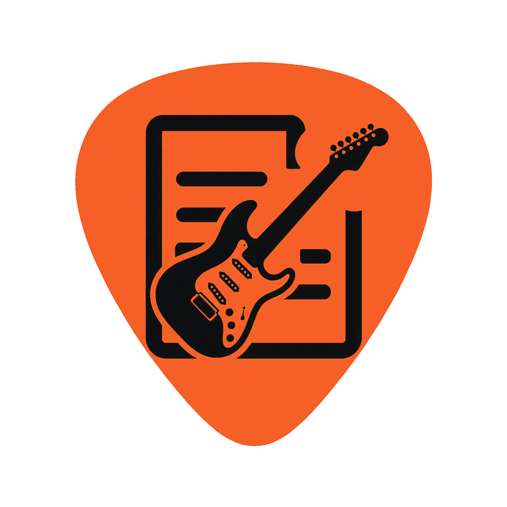

TabLift
Your songs, with an AI coach
Learn the songs you love, not someone else's playlist. TabLift turns any chord sheet
into a clean, playable song, and its AI coach helps you actually play it: what the
song is doing, where it gets hard, and an easier way through. For guitar and ukulele,
on iPhone, iPad, Android, and as a Chrome extension. Free, with no ads.
Most apps teach you their songs. TabLift helps you play yours.
Bring any song
- Share a song to TabLift from your browser or another app, paste it, type it, or open a ChordPro file; in Chrome, lift the chord or tab page you're reading
- Or start with 18 free songs, from two chords up
- Chord diagrams above the lyrics, transpose, a capo helper, auto-scroll and a full-screen play mode
- One tap for easier: no barres, simpler chords or power chords, and shapes that fit your hand (left-handed too)
- Your own library, with set lists, collections, notes and a strumming pattern for each song
An AI coach for your songs
Part of TabLift Pro, in the app and most of it in the Chrome extension.
- Explain any song: what it's doing, the hard parts, the strum and tempo
- Drill this change: go straight to practicing the change that trips you up, then back to your song
- Make it easier: easier chords drawn out, and an easier copy saved to your library
- A step-by-step practice plan for any song
- Licks over your songs, jam tracks and progressions, from simple to two-bar phrases, lit up as each chord plays; save the ones you like
- Scan a songbook page and it's typed out as a song
- Ask the coach anything about your playing, and get a weekly note on how it's going
- Clean up pasted songs, and fill in the title, artist, key and tempo
Practice built from your songs
- A plan for today and this week from your own library: the chord to learn, the change to drill, the song to play
- Drills that listen as you play: chord changes counted, timing checked
- Jam tracks in any key and style, loops you record yourself, and a speed trainer
Chords, scales & keys
- Any chord in 17 tunings, every way to play it up the neck, and tap to hear it
- Scales across the neck, the circle of fifths, and the chords in every key
- The scales to solo over any chord or song
TabLift Pro
Everything above except the AI coach is free, with no ads and no account needed.
TabLift Pro ($1.99 a month, with a 7-day free trial) adds
the things that cost money to run:
- The AI coach for your songs
- Your songs, set lists and collections synced across phone, tablet and browser
- Your practice progress saved to your account, there on any phone or after reinstalling
Private by design
TabLift works with no account, and your library stays on your device. Signing in
(Google, or Apple) is optional and is only for sync and Pro. The microphone is on only
while the tuner, a recording or a listening drill runs, and what it hears never leaves
your phone. AI features send only what each one needs, only when you tap one, and it
isn't used to train AI. See the Privacy Policy for
exactly what's stored and how to delete it at any time.